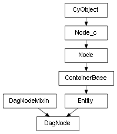

class cymel.core.cyobjects.dagnode.DagNode¶

-
class
cymel.core.cyobjects.dagnode.DagNode¶ ベースクラス:
cymel.core.cyobjects.dagnode_c.DagNodeMixin,cymel.core.typeregistry.EntitydagNode ノードタイプラッパークラス。
固定引数無しでのクラスインスタンス生成時のノード生成をサポート。
Methods:
hide()visibility アトリビュートを False にする。 iterBreadthFirst([shapes, intermediates, ...])DAGノードツリーを幅優先反復する。 iterDepthFirst([shapes, intermediates, ...])DAGノードツリーを深さ優先反復する。 setParent([parent, r, add, avoidJointShear])親ノードを変更する。 show()visibility アトリビュートを True にする。 Attributes:
-
TYPE_BITS= 1¶ クラスでサポートしているノードの特徴を表す。
Methods Details:
-
hide()¶ visibility アトリビュートを False にする。
-
iterBreadthFirst(shapes=False, intermediates=False, underWorld=False)¶ DAGノードツリーを幅優先反復する。
パラメータ: 戻り値の型: yeild
DagNode
-
iterDepthFirst(shapes=False, intermediates=False, underWorld=False)¶ DAGノードツリーを深さ優先反復する。
パラメータ: 戻り値の型: yeild
DagNode
-
setParent(parent=None, r=False, add=False, avoidJointShear=False)¶ 親ノードを変更する。
パラメータ: - parent -- 親の
Transformや名前。省略すればペアレント解除。 - r (bool) -- 現在のローカル変換を維持するかどうか。 デフォルトではワールド空間で維持される。
- add (bool) -- 移動ではなくパスを追加する（インスタンス）。
- avoidJointShear (bool) -- このノードが joint で、ワールド姿勢の維持のために shear が必要な場合に、その使用を避けるための transform が 追加されるようにする。 これは本来の Maya の挙動だが、このメソッドのデフォルトでは joint の shear を使用することで transform を追加しない。
警告
2019 全てと 2020.0 では、joint の shear は機能しないため、 avoidJointShear=True を指定しないと姿勢を維持できない場合がある。 この問題は 2020.1 以降はバグとして修正されている。
- parent -- 親の
-
show()¶ visibility アトリビュートを True にする。
-